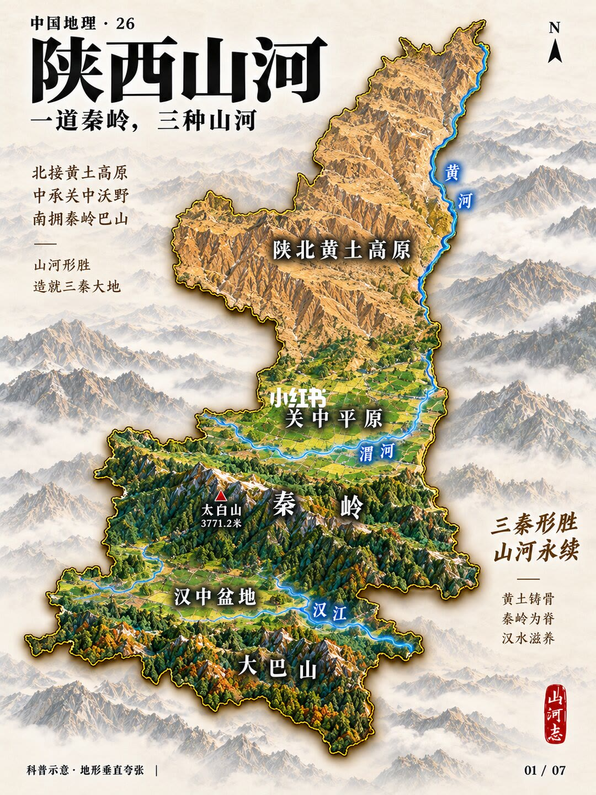
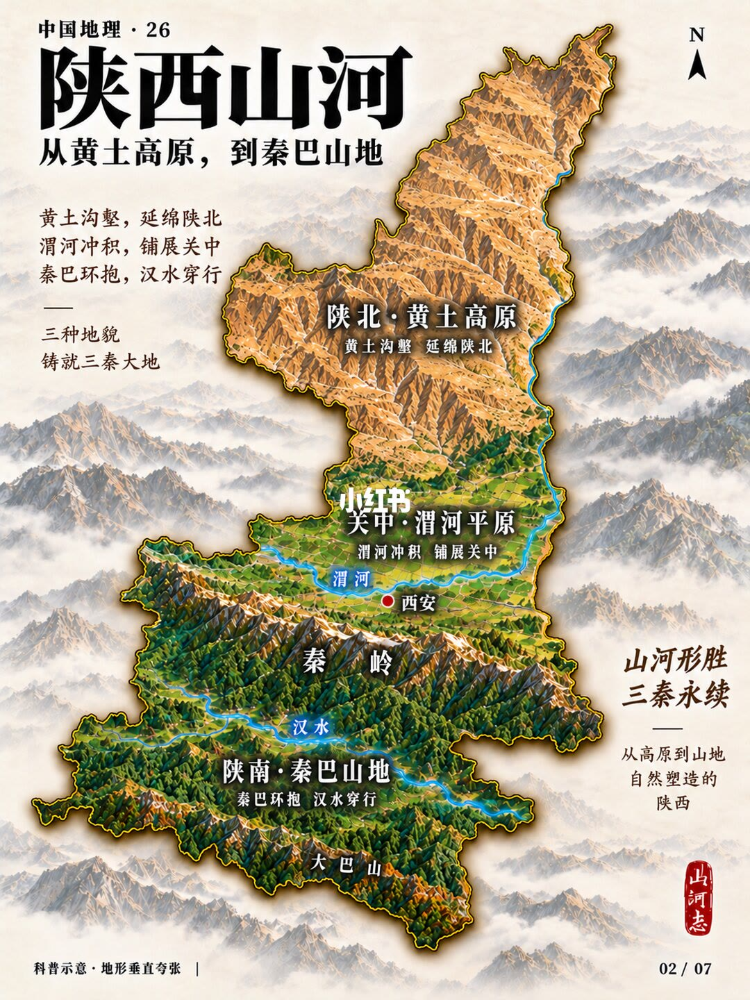
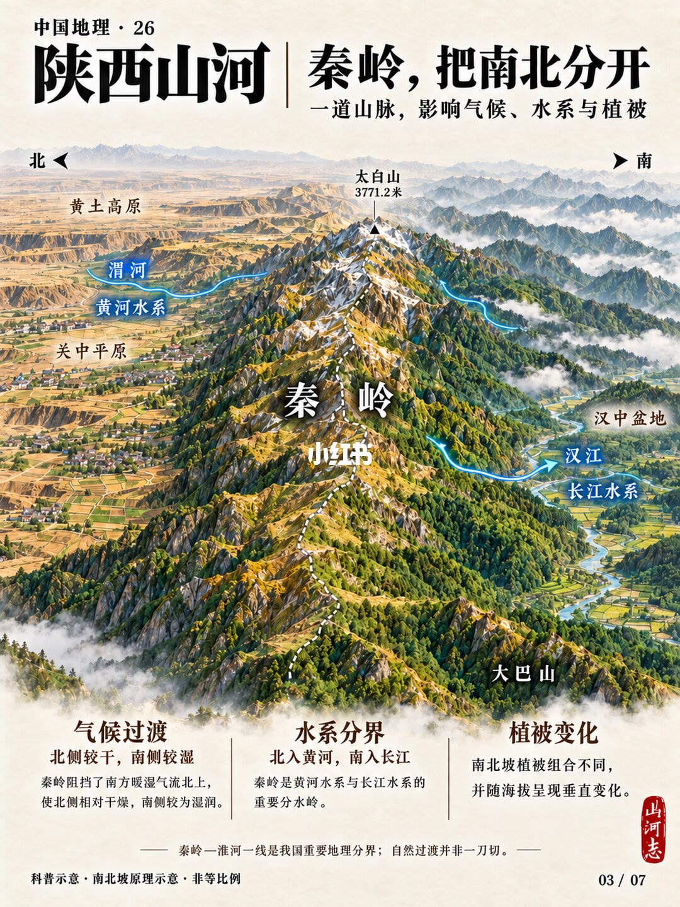
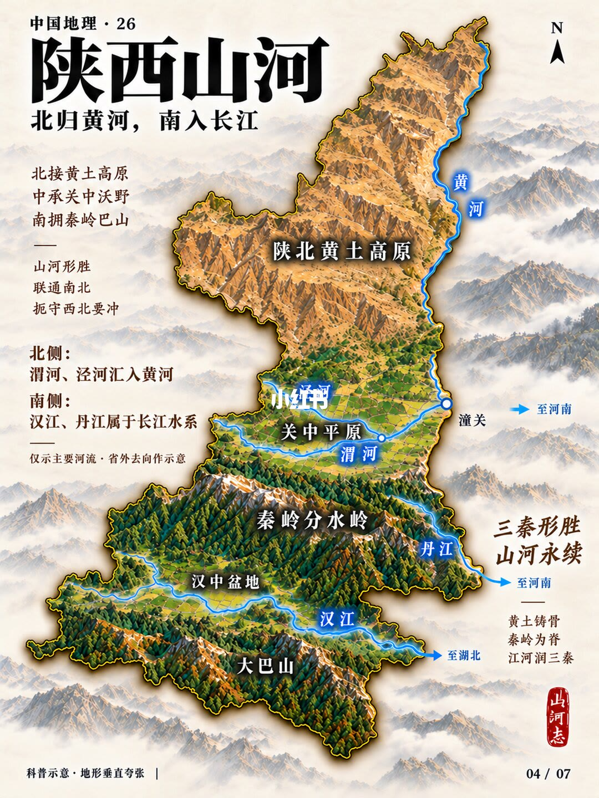
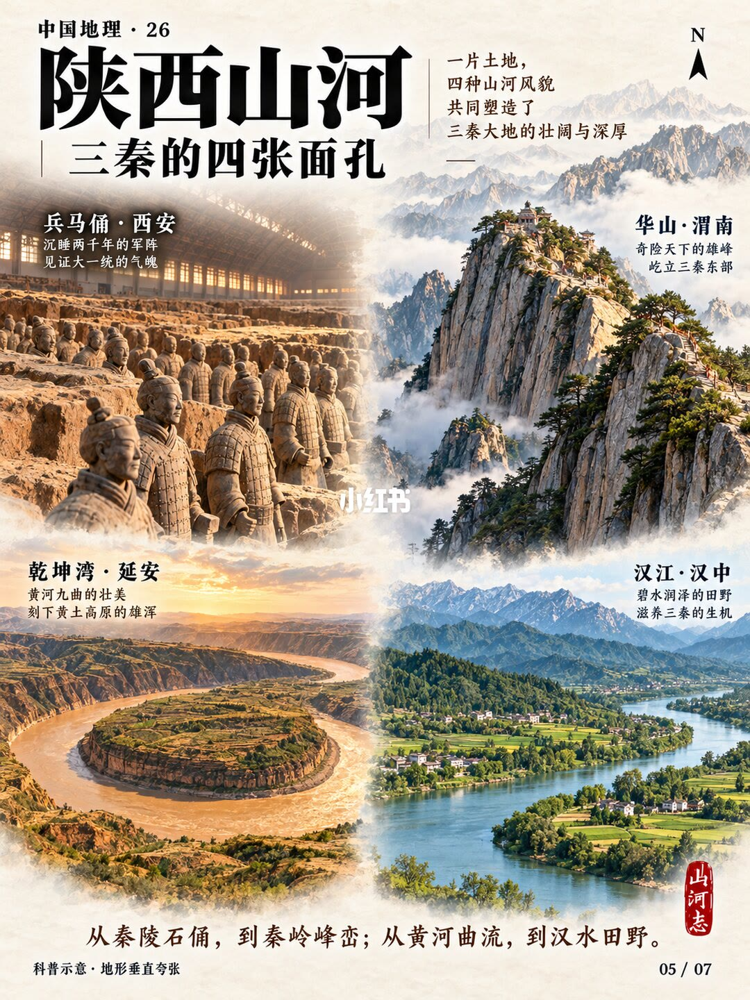
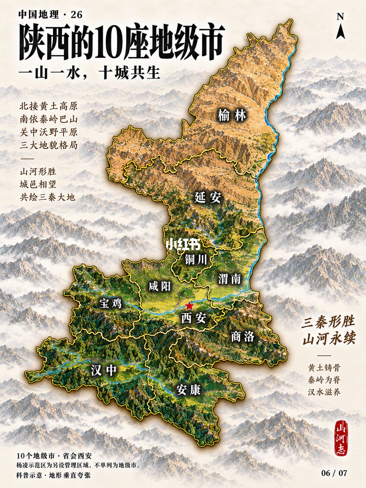
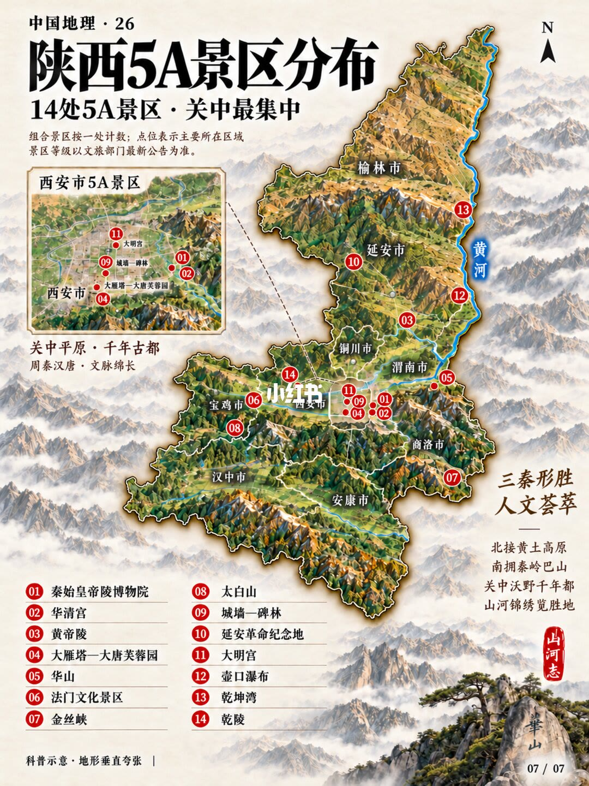

第 1 页：一道秦岭，三种山河

1/7立体地形总览：陕北黄土高原、关中平原、陕南秦岭—大巴；太白山 3771.2 米。黄土铸骨、秦岭为脊、汉水滋养。
Overview: Loess Plateau, Guanzhong Plain, Qinling–Daba; Taibai 3771.2 m—loess bones, Qinling spine, Han River nourishes.
第 2 页：从黄土高原到秦巴山地

2/7三区并列：陕北黄土沟壑、关中渭河平原（西安）、陕南秦巴山地与汉水；地貌三分铸三秦。
Three belts: loess gullies, Wei River plain with Xi’an, Qinling–Daba with Han River.
第 3 页：秦岭把南北分开

3/7一道山脉影响气候、水系与植被：北侧偏干接黄土/渭河/黄河水系，南侧偏湿接汉中/汉江/长江水系；秦岭—淮河是重要分界但非一刀切。
Qinling divides climate, drainage, and vegetation—north drier Yellow River side, south wetter Yangtze side.
第 4 页：北归黄河，南入长江

4/7北侧渭河、泾河汇黄河；南侧汉江、丹江属长江水系；关中潼关一带为黄河转折示意。
Hydrology: Wei/Jing to Yellow River north; Han/Dan to Yangtze south.
第 5 页：三秦的四张面孔

5/7兵马俑·西安、华山·渭南、乾坤湾·延安、汉江·汉中——史迹、奇险、黄曲、清流四风貌。
Four faces: Terracotta Army, Hua Shan, Qiankun Bend, Han River fields.
第 6 页：一山一水，十城共生

6/7十个地级市叠在三分地貌上：榆林延安偏北，关中西安等，汉中安康商洛偏南；杨凌示范区另计。
Ten prefecture-level cities overlaid on the three landform belts.
第 7 页：陕西 5A 景区分布

7/714 处 5A，关中最密：秦始皇帝陵、华清宫、黄帝陵、大雁塔—芙蓉园、华山、法门、金丝峡、太白山、城墙—碑林、延安革命纪念地、大明宫、壶口、乾坤湾、乾陵等。
Fourteen 5A sites, densest in Guanzhong, listed on the relief map.